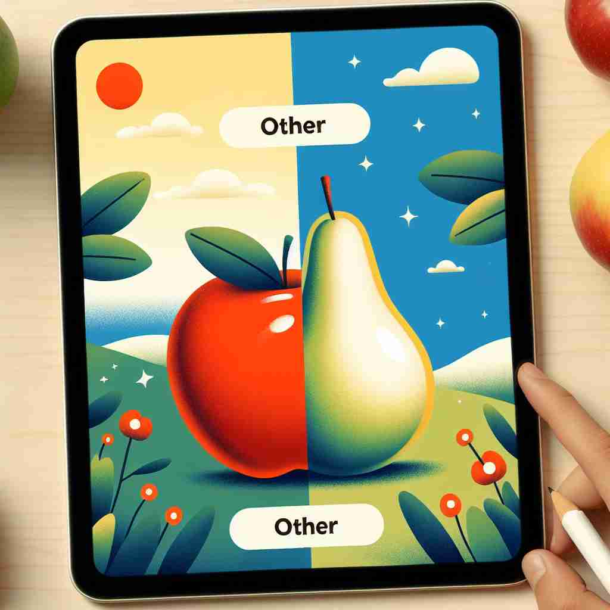

🗝️ adj./pron. different from the one or ones already mentioned or known about
🖼️ 在一个托儿所里，老师正在分配玩具。一个孩子拿到一辆红色小汽车，但他指着架子上的蓝色小汽车说：'我想要 other 的那辆汽车。'这个场景展示了'other'表示不同于已提及或已知的东西。
🔍 记忆'other'时，想象一条分界线。这条线的一边是已知或提到的事物，另一边就是'other'——不同的、额外的或剩余的。无论是形容词、代词还是名词用法，都围绕着这个'分隔'的核心概念。这种思维方式可以帮助你更好地理解和运用'other'的各种含义。

💬 The man is looking at the other color options for the shirt.

💬 On the other side, the buildings look very different in the moonlight.
💬 The boy is watching TV while the other children are playing outside.

💬 The apple is red, and the other fruit is a pear.
🔗 1. another: 另一个 2. otherwise: 否则 3. otherness: 他性
🗝️ adj. additional or further
🖼️ 在一个午餐会上，服务员来到一位客人旁边，问道：'您还想要 other 一杯咖啡吗？'客人微笑着点头。这个场景展示了'other'表示额外或进一步的意思。
💬 Are there any other questions?
❓ 从"不同于已知"延伸到"额外的"
🗝️ adj. alternative or second
🖼️ 在一个手机店里，顾客正在考虑购买手机。他试图在两款型号中做选择，销售员说：'如果您对这个型号不满意，您可以看看 other 的那款，它也很受欢迎。'这个场景展示了'other'表示替代或第二选择。
💬 If this doesn't work, we'll try the other option.
❓ 基于"不同"概念，表示另一个选择
🗝️ pron. the remaining one(s) of two or more
🖼️ 在一个晚宴上，餐桌上摆放着三只蜡烛，只有一只被点燃。主人说：'请帮我点燃 other 的两支蜡烛。'这个场景展示了'other'表示剩下的物件。
💬 One child was crying, but the others were laughing.
❓ 从"不同"引申为"剩下的那个/些"
🗝️ n. different types of people or things regarded as a group
🖼️ 在一个文化节庆上，主持人介绍完主要表演后，说道：'接下来，请欣赏来自世界各地的 other 表演。他们将为我们带来不一样的文化体验。'这个场景描述了'other'作为不同类型的人或事物的集合。
💬 Some people like coffee, others prefer tea.
❓ 将"不同的"事物或人群化为一个整体
🗝️ v. to consider (someone or something) as different or separate
🖼️ 在一次公司会议中，一位经理提起新的项目时说：'在这个项目中，我们不能 other 团队成员，他们都是我们需要依靠的一部分。'这个场景展示了'other'表示将某人或某事物视为不同或分开的意思。
💬 She tends to other herself from the group.
❓ 将"不同"的概念动词化